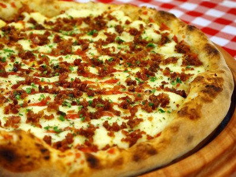

Pizza

Delicious Homemade Pizza
Description
This homemade pizza is a delightful feast. The dough made with flour, yeast, and a touch of sugar and salt yields a crispy and chewy crust. Spread with a generous layer of tomato sauce and topped with gooey melted mozzarella cheese, it's a delightful base for any toppings of your choice. Whether you prefer classic pepperoni, mushrooms, olives, or a combination of your favorite ingredients, this pizza offers endless possibilities. Baked to perfection, this pizza is perfect for sharing with family and friends on any occasion.
Ingredients
- Dough:
- 400g all-purpose flour
- 1 packet (10g) dry yeast
- 1 teaspoon sugar
- 1 teaspoon salt
- 1 and 1/4 cups warm water
- 2 tablespoons olive oil
- Tomato Sauce:
- 200g tomato sauce
- 200g shredded mozzarella cheese
- Toppings (of your choice):
- Sliced tomatoes
- Sliced ham
- Pepperoni
- Sliced mushrooms
- Olives
- Sliced onions
- Sliced bell peppers
- Dried oregano to taste
- Olive oil for drizzling
Instructions
- In a bowl, mix the all-purpose flour, dry yeast, sugar, and salt.
- Add the warm water and olive oil gradually while stirring with a spoon until the dough starts to come together.
- Transfer the dough to a lightly floured surface and knead for about 5 to 7 minutes, or until you get a smooth and elastic dough.
- Cover the dough with a clean cloth and let it rest in a warm place for approximately 1 hour, or until it doubles in size.
- Preheat the oven to 220°C (430°F).
- Divide the dough into two portions and roll each one with a rolling pin on a floured surface to form disks of the desired thickness.
- Transfer the disks to a baking sheet or pizza stone.
- Spread the tomato sauce over each pizza dough.
- Sprinkle the shredded mozzarella cheese evenly over the sauce.
- Add your preferred toppings, such as tomatoes, ham, pepperoni, mushrooms, olives, onions, and bell peppers.
- Season with dried oregano to taste and drizzle with olive oil.
- Place the pizzas in the preheated oven and bake for about 15 to 20 minutes, or until the crust turns golden and the cheese melts and bubbles.
- Remove the pizzas from the oven, slice, and serve immediately.